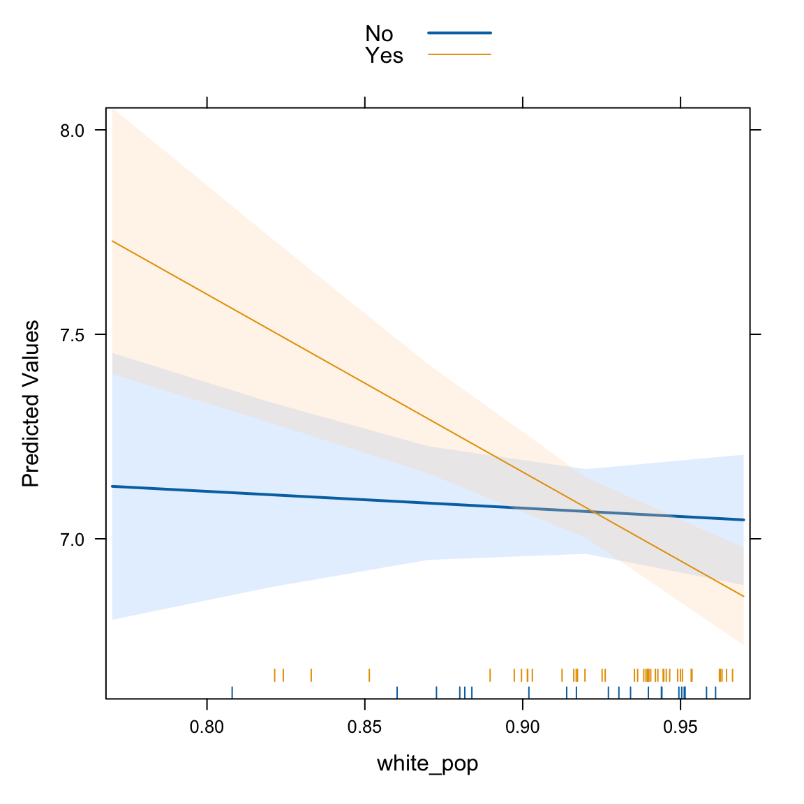

Chapter 3 Linear Models
As we all know, linear models are the workhorse of statistical modeling. These are ubiquitous across disciplines whether in the OLS regression framework or in a classical ANOVA framework. Here, we’re going to focus on the OLS regression framework to highlight lots of what you can do with linear models in R. We will work with the COVID-19 data from Colorado that we worked with before.
There are a few things worth noting here. First, as discussed previously, the main argument here is a formula where the outcome variable is on the left-hand side of the tilde (~) and the explanatory variables are on the right-hand side of the tilde. They can be separated by plus signs if an additive model is desired or with asterisks if the effect of the variables is conditional on each other. We will see an example of this below.
##
## Call:
## lm(formula = log(cases_pc) ~ white_pop, data = colo_dat)
##
## Residuals:
## Min 1Q Median 3Q Max
## -0.61171 -0.15814 -0.01486 0.14214 0.69646
##
## Coefficients:
## Estimate Std. Error t value Pr(>|t|)
## (Intercept) 8.9881 0.6995 12.848 < 2e-16 ***
## white_pop -2.0956 0.7596 -2.759 0.00762 **
## ---
## Signif. codes: 0 '***' 0.001 '**' 0.01 '*' 0.05 '.' 0.1 ' ' 1
##
## Residual standard error: 0.2528 on 62 degrees of freedom
## Multiple R-squared: 0.1093, Adjusted R-squared: 0.09496
## F-statistic: 7.61 on 1 and 62 DF, p-value: 0.007618The stargazer package allows us to export model results in a way that is nicely presented in an RMarkdown document, a LaTeX document or to word through html.
library(stargazer)
stargazer(mod, type="html",
style="ajps",
covariate.labels=c(
"White Population (%)",
"Intercept"),
star.cutoffs=.05,
star.char = "`*`",
notes="`*` p < .05",
notes.append=FALSE)| log(cases_pc) | |
| White Population (%) |
-2.096*
|
| (0.760) | |
| Intercept |
8.988*
|
| (0.700) | |
| N | 64 |
| R-squared | 0.109 |
| Adj. R-squared | 0.095 |
| Residual Std. Error | 0.253 (df = 62) |
| F Statistic |
7.610* (df = 1; 62)
|
* p < .05
|
|
To include in a word document, you could do the following:
cat(
stargazer(mod, type="html",
style="ajps",
covariate.labels=c(
"White Population (%)",
"Intercept"),
star.cutoffs=.05,
star.char = "`*`",
notes="`*` p < .05",
notes.append=FALSE),
file="table.html")Then you could choose Insert \(\rightarrow\) File… and browse to the file table.html that you just created. This will bring the table into your Word document nicely formatted. Alternatively, you could write in RMarkdown and knit to a Word document.
Now, back to the model. In the above, we know that for every 1 unit change in white_pop (the proportion of the population that is white), that the log of cases per 10,000 people goes down by 2 units. This is a reasonably big change on the log scale, but a one-unit change is also huge. It represents changing from a county with no white people to a county with only white people. In reality, the range of the white_pop variable is:
## [1] 0.7672597 0.9664671Given that it varies in a reasonably small range, it might be worth trying to plot out the variable’s effect. There are a couple of different ways to do this. One is with the effects package that produces lattice plots of the effects. The other is with the ggeffects package, which makes it easy to make ggplot2 plots of the effect. Let’s start with the effects package.
You Try It!
Using the GSS 2016 data that we used in the previous chapter, estimate a regression of aid_scale on age, sei10, the log of realinc, partyid and sex.
- Make a nice looking table of the results.
3.1 Effects Plots
The Effect() function from the effects package allows us to plot the effect of a variable in a model. For example,
Note that the summary object has 50 values from the smallest to largest values of white_pop along with their predictions and \(95\%\) confidence intervals. We can make a plot of those values with the plot() function:
In general, the effect package will unwind any functions or transformations of the independent variables, but not the dependent variable. So, we would have to do that ourselves. Doing this kind of a transformation is a bit difficult without some more intervention, so why don’t we move to the ggeffects package. We’ll make the same plot as above.
You Try It!
Use the effects package to make a plot of the effect of realinc on aid_scale.
## Model has log-transformed response. Back-transforming predictions to original response
## scale. Standard errors are still on the transformed scale.ggplot(preds, aes(x=x, y=predicted)) +
geom_ribbon(aes(ymin=conf.low, ymax=conf.high),
alpha=.25) +
geom_line() +
theme_bw() +
labs(x="Proportion of the Population that is White",
y="Predicted COVID-19 Cases/10k")The terms= argument identifies the terms to move around. Everything else will be held constant at representative values. In particular white_pop [all] means move the white_pop variable and use all of its unique values to generate predictions. The output from ggpredict always names the first variable in terms= - x, the predictions predicted and the confidence bounds conf.low and conf.high. You may also note that a warning got printed indicating that the model had a log-transformed response and that the predictions and confidence intervals were back-transformed to the original scale of the \(y\)-variable (i.e., cases/10k rather than log(cases/10k)). The standard errors remain on the scale defined by the model rather than the original response scale. The confidence intervals are transformed using an end-point transformation which means that they are arrived at, in this case, on the log scale and then simply transformed by applying exp() to the bounds and fit.
You Try It!
Use the ggeffects package to replicate the graph you just made with the effects package.
To see how it works, let’s add a categorical variable - the three category metro, urban, rural variable should work. We’ll also add in the republican majority variable, too.
library(stringr)
colo_dat <- colo_dat %>%
mutate(mur = str_extract(urban_rural, "Metro|UP|Rural"),
mur = factor(mur, levels=c("Rural", "UP", "Metro")),
rep_maj = factor(repvote > .5,
levels=c(FALSE,TRUE),
labels=c("No", "Yes")))Now, we can estimate the model:
##
## Call:
## lm(formula = log(cases_pc) ~ mur + rep_maj + white_pop, data = colo_dat)
##
## Residuals:
## Min 1Q Median 3Q Max
## -0.58724 -0.16880 -0.02825 0.13434 0.67306
##
## Coefficients:
## Estimate Std. Error t value Pr(>|t|)
## (Intercept) 9.31144 0.74099 12.566 < 2e-16 ***
## murUP 0.09553 0.07365 1.297 0.19965
## murMetro -0.08477 0.08809 -0.962 0.33984
## rep_majYes 0.01376 0.06741 0.204 0.83892
## white_pop -2.47620 0.79404 -3.118 0.00281 **
## ---
## Signif. codes: 0 '***' 0.001 '**' 0.01 '*' 0.05 '.' 0.1 ' ' 1
##
## Residual standard error: 0.2476 on 59 degrees of freedom
## Multiple R-squared: 0.187, Adjusted R-squared: 0.1319
## F-statistic: 3.393 on 4 and 59 DF, p-value: 0.0145Here, we see a slightly bigger effect of white_pop. If we wanted to test the significance of the term rather than the coefficient (i.e., all of the mur coefficients jointly equal to zero rather than independent tests), we could use that Anova() function from the car package.
## Anova Table (Type II tests)
##
## Response: log(cases_pc)
## Sum Sq Df F value Pr(>F)
## mur 0.3273 2 2.6696 0.07764 .
## rep_maj 0.0026 1 0.0417 0.83892
## white_pop 0.5962 1 9.7249 0.00281 **
## Residuals 3.6171 59
## ---
## Signif. codes: 0 '***' 0.001 '**' 0.01 '*' 0.05 '.' 0.1 ' ' 1By default, you get a type II test, though you could get a type III test, by specifying type="III". To remind, the difference comes from how higher order terms are handled. Let’s imagine we’ve got the following model:
\[y = b_0 + b_1x + b_2z + b_3xz + b_4w + e\]
In this case, we have a higher order term (the interaction between \(x\) and \(z\)). A type II test would execute the following four tests:
- Is \(x\) significant controlling for \(z\) and \(w\), but not \(xz\).
- Is \(z\) significant controlling for \(x\) and \(w\), but not \(xz\).
- Is \(xz\) significant controlling for \(x\), \(z\) and \(w\).
- Is \(w\) significant controlling for \(x\), \(z\) and \(xz\).
A type III test would test each term controlling for all other terms, including higher order terms. This is more like what you would get from the regression output. Arguably, type II tests are more interesting because they don’t presume the existence of the higher order term in testing lower-order terms, thus making them appropriate for evaluating the significance of lower order terms independently of the higher order term.
3.2 Diagnostic Tools: Linearity
There are lots of diagnostic tools for the linear model. Perhaps one of the most useful is the component + residual plot. This can be produced with the crPlot() function in the car package. If we’ve got the following model:
\[\log(\text{Cases}) = b_0 + b_1\text{Urban} + b_2\text{Metro} + b_3\text{Republican Majority} + b_4\text{White} + e\]
then the component plus residual plot for white_pop would have the variable itself on the \(x\)-axis and on the \(y\)-axis would be \(b_4\text{White} + e\) the component (the systematic part of the model relating to the variable of interest) plus the model residual. The line running through plot has a slope of \(b_4\). The pink line is a local polynomial regression fit to the points. This allows us to evaluate whether there are any un-modeled non-linearities in the data.
We could try a couple of different potential solutions to the non-linearity exhibited in the plot. If we thought the non-linearity was simple and monotone, we could use a non-linear transformation. The Box-Tidwell transformation would be appropriate here. This model identifies the optimal power transformation to linearize the relationship.
## MLE of lambda Score Statistic (t) Pr(>|t|)
## 3.1542 -0.3487 0.7286
##
## iterations = 15The proposed power transformation is \(x^{3.15}\). We could see what it looks like if we wanted.
The transformation is actually not very severe at all. Further, the \(p\)-value indicates that the transformation isn’t necessary. Here, the null hypothesis is that no transformation is needed. If, instead, we thought that the non-monotonicity in the CR Plot was interesting, we could estimate a polynomial. In R, polynomials are estimated with the poly() function and by default are orthogonalized. This essentially implements a type II test for polynomial regressors. You can turn off the orthogonalization by specifying raw=TRUE as an argument to the function. This would implement a type III test for the polynomial regressors. For example the code below would estimate a third-degree polynomial in white_pop:
You Try It!
Use the methods discussed above to evaluate linearity for age, sei10 and realinc. For realinc see whether the log is just as good as other transformations.
##
## Call:
## lm(formula = log(cases_pc) ~ mur + rep_maj + poly(white_pop,
## 3), data = colo_dat)
##
## Residuals:
## Min 1Q Median 3Q Max
## -0.57772 -0.16630 -0.02752 0.12212 0.60664
##
## Coefficients:
## Estimate Std. Error t value Pr(>|t|)
## (Intercept) 7.026087 0.076183 92.227 < 2e-16 ***
## murUP 0.104443 0.075243 1.388 0.17052
## murMetro -0.059484 0.090855 -0.655 0.51529
## rep_majYes 0.009006 0.067481 0.133 0.89430
## poly(white_pop, 3)1 -0.794998 0.264879 -3.001 0.00398 **
## poly(white_pop, 3)2 -0.072051 0.251579 -0.286 0.77561
## poly(white_pop, 3)3 0.364747 0.254274 1.434 0.15690
## ---
## Signif. codes: 0 '***' 0.001 '**' 0.01 '*' 0.05 '.' 0.1 ' ' 1
##
## Residual standard error: 0.2473 on 57 degrees of freedom
## Multiple R-squared: 0.2167, Adjusted R-squared: 0.1343
## F-statistic: 2.629 on 6 and 57 DF, p-value: 0.02551As you can see, the second and third order terms are not statistically significant, indicating that the linear relationship is sufficient. These findings make sense if we include the confidence bounds around the loess curve in the CR plot. There is a bug in the crPlot() function that doesn’t allow us to do this, but we could make it “by hand” with ggplot2. In the code below, the augment() function comes from the broom package and it puts model results (like fitted values and residuals) in a data frame with the original variables in the model. In addition, we’re obtaining the partial residuals for the white_pop variable and adding those into the data.
library(broom)
aug <- augment(mod2, data=colo_dat) %>%
mutate(p.resid = residuals(mod2, type="partial")[,"white_pop"])
ggplot(aug, aes(x=white_pop, y=p.resid)) +
geom_point(shape=1) +
geom_smooth(method="lm",
se=FALSE)+
geom_smooth(method="loess",
se=TRUE,
col="red",
fill=rgb(1,0,0,.25, maxColorValue = 1)) +
theme_bw() +
labs(x="Proportion Over 60",
y="Component + Residual")
In the plot above, you can see that the linear model line is generally within the confidence bounds of the loess curve, making it unsurprising that potential fixes to the non-linearity problem were not necessary.
3.3 Diagnostic Tools: Heteroskedasticity
There are tools for detecting heteroskedasticity. The car package has a function called ncvTest() which estimates a score test of the residuals. It starts by calculating the standardized squared residuals
\[U_{i} = \frac{E_{i}^{2}}{\hat{\sigma}^{2}} = \frac{E_{i}^{2}}{\frac{\sum E_{i}^{2}}{n}}\]
Then, it regress the \(U_{i}\) on all of the explanatory variable \(X\)’s or the fitted values \(\hat{y}\), finding the fitted values:
\[U_{i} = \eta_{0} + \eta_{1}X_{i1} + \cdots + \eta_{p}X_{ip} + \omega_{i}\]
The score is then calculated as:
\[S_{0}^{2} = \frac{\sum(\hat{U}_{i} - \bar{U})^{2}}{2}\]
and \(S_{0}^{2}\) is distributed as \(\chi^{2}\) with \(p\) degrees of freedom. The results for our model are below:
## Non-constant Variance Score Test
## Variance formula: ~ fitted.values
## Chisquare = 1.137662, Df = 1, p = 0.28615Here, we see not much evidence of heteroskedasticity, but it is probably worth looking at the residuals vs fitted plot anyway.
Or, we could actually plot out the standardized squared residuals against the fitted values.
sigma2 <- sum(mod2$residuals^2)/nobs(mod2)
ggplot(mapping=aes(x=mod2$fitted.values,
y=I(mod2$residuals^2/sigma2))) +
geom_point() +
geom_smooth(se=TRUE, alpha=.25) +
theme_bw()In this case, even though the test was not significant, we would probably want to investigate potential “fixes” to the problem just the same. In fact, the test is known to have relatively low power in small samples. The advice then is to “fix” the problem if there is any hint of heteroskedasticity even if the test isn’t conclusive.
One of the most common fixes is to use robust standard errors. Robust standard errors can be calculated to compensate for an unknown pattern of non-constant error variance. They do not change the OLS coefficient estimates or solve the inefficiency problem, but do give more accurate \(p\)-values in the presence of the problem. These come in lots of different “flavors”, most of which are variants on the method originally proposed by White (1980).
The covariance matrix of the OLS estimator is:
\[\begin{aligned} V(\mathbf{b}) &= \mathbf{(X^{\prime}X)^{-1}X^{\prime}\Sigma X(X^{\prime}X)^{-1}}\\ &= \mathbf{(X^{\prime}X)^{-1}X^{\prime}}V(\mathbf{y})\mathbf{ X(X^{\prime}X)^{-1}} \end{aligned}\]
Where \(V(\mathbf{y}) = \sigma_{\varepsilon}^{2}\mathbf{I}_{n}\) if the assumption of homoskedasticity is satisfied. The variance simplifies to:
\[V(\mathbf{b}) = \sigma_{\varepsilon}^{2}(\mathbf{X^{\prime}X})^{-1}\]
In the presence of non-constant error variance, however, \(V(\mathbf{y})\) contains nonzero covariance and unequal variance. In these cases, White suggests a consistent estimator of the variance that constrains \(\mathbf{\Sigma}\) to a diagonal matrix containing only squared residuals. The heteroskedasticity consistent covariance matrix (HCCM) estimator is then:
\[V(\mathbf{b}) = \mathbf{(X^{\prime}X)^{-1}X^{\prime}\hat{\Phi}X (X^{\prime}X)^{-1}}\]
where \(\mathbf{\hat{\Phi}} = e^{2}_{i}\mathbf{I}_{n}\) and the \(e_{i}\) are the OLS residuals.
These are known as HC0 robust standdard errors. Other HCCMs use the “hat value” which are the diagonal elements of \(\mathbf{X}\left(\mathbf{X}^{\prime}\mathbf{X}\right)^{-1}\mathbf{X}^{\prime}\)
These give a sense of how far each observation is from the mean of the X’s. Below is a figure that shows two hypothetical \(X\) variables and the plotting symbols are proportional in size to the hat value
set.seed(123)
X <- cbind(1, MASS::mvrnorm(25, c(0,0), diag(2)))
h <- diag(X%*% solve(t(X)%*%X)%*%t(X))
plot(X[,2], X[,3], cex = h*10)
abline(h=mean(X[,3]), v=mean(X[,2]))MacKinnon and White (1985) considered three alternatives: HC1, HC2 and HC3, each of which offers a different method for finding \(\mathbf{\Phi}\).
- HC1: \(\frac{N}{N-K}\times\text{HC0}\).
- HC2: \(\hat{\mathbf{\Phi}} = \text{diag}\left[\frac{e_{i}^{2}}{1-h_{ii}}\right]\) where \(h_{ii} = \mathbf{x}_{i}(\mathbf{X}^{\prime}\mathbf{X})^{-1}\mathbf{x}_{i}^{\prime}\)
- HC3: \(\hat{\mathbf{\Phi}} = \text{diag}\left[\frac{e_{i}^{2}}{(1-h_{ii})^{2}}\right]\)
HC3 standard errors are shown to outperform the alternatives in small samples, but can still fail to generate the appropriate Type I error rate when outliers are present. HC4 standard errors can produce the appropriate test statistics even in the presence of outliers:
\[\hat{\mathbf{\Phi}} = \text{diag}\left[\frac{e_{i}^{2}}{(1-h_{ii})^{\delta_{i}}}\right]\]
where \(\delta_{i} = min\left\{4, \frac{N h_{ii}}{p}\right\}\) with \(n\) = number of obs, and \(p\) = number of parameters in model.
HC4 outperform HC3 in the presence of influential observations, but not in other situations. HC4 standard errors are not universally better than others and as Cribari-Neto and da Silva (2011) show, HC4 SEs have relatively poor performance when there are many regressors and when the maximal leverage point is extreme. Cribari-Neto and da Silva propose a modified HC4 estimator, called HC4m, where, as above:
\[\hat{\mathbf{\Phi}} = \text{diag}\left[\frac{e_{i}^{2}}{(1-h_{ii})^{\delta_{i}}}\right]\]
and here, \(\delta_{i} = min\left\{\gamma_{1}, \frac{nh_{ii}}{p}\right\} + min\left\{\gamma_{2}, \frac{nh_{ii}}{p}\right\}\).
They find that the best values of the \(\gamma\) parameters are \(\gamma_{1}=1\) and \(\gamma_{2}=1.5\). HC5 standard errors are supposed to also provide different discounting than HC4 and HC4m estimators. The HC5 standard errors are operationalized as:
\[\hat{\mathbf{\Phi}} = \text{diag}\left[\frac{e_{i}^{2}}{(1-h_{ii})^{\delta_{i}}}\right]\]
and here, \(\delta_{i} = min\left\{\frac{nh_{ii}}{p}, max\left\{4, \frac{nkh_{max}}{p}\right\}\right\}\) with \(k=0.7\).
For observations with bigger hat-values, their residuals get increased in size, thus increasing the standard error (generally).
The coeftest() function in the lmtest package allows you to specify any of these HCCMs.
##
## t test of coefficients:
##
## Estimate Std. Error t value Pr(>|t|)
## (Intercept) 9.311443 1.096578 8.4914 8.117e-12 ***
## murUP 0.095534 0.087910 1.0867 0.28158
## murMetro -0.084766 0.104986 -0.8074 0.42267
## rep_majYes 0.013764 0.066645 0.2065 0.83709
## white_pop -2.476198 1.160102 -2.1345 0.03697 *
## ---
## Signif. codes: 0 '***' 0.001 '**' 0.01 '*' 0.05 '.' 0.1 ' ' 1You Try It!
Now, re-estimate the model with the appropriate functional forms. - Test the model for heteroskedasticity problems. - Use robust standard errors to test model coefficients. - How do results change as you change the type of HCCM?
We could use this to provide information to the ggpredict() and stargazer() as well.
g <- ggpredict(mod2,
terms="white_pop [all]",
vcov.fun="vcovHC",
vcov.type="HC5")
ggplot(g, aes(x=x, y=predicted)) +
geom_ribbon(aes(ymin=conf.low, ymax=conf.high),
alpha=.25) +
geom_line() +
theme_bw() +
labs(x="White Population (%)",
y="Predicted COVID-19 Cases/10k")We could also provide these to the stargazer() function.
library(stargazer)
ct <- coeftest(mod2, vcov.=vcovHC(mod2, type="HC5"))
stargazer(mod2, type="html",
style="ajps",
covariate.labels=c(
"Urban Area",
"Metro Area",
"Republican Majority (0/1)",
"Whie Population (%)",
"Intercept"),
se = list(ct[,2]),
t = list(ct[,3]),
p = list(ct[,4]),
star.cutoffs=.05,
star.char = "`*`",
notes="`*` p < .05",
notes.append=FALSE)| log(cases_pc) | |
| Urban Area | 0.096 |
| (0.088) | |
| Metro Area | -0.085 |
| (0.105) | |
| Republican Majority (0/1) | 0.014 |
| (0.067) | |
| Whie Population (%) |
-2.476*
|
| (1.160) | |
| Intercept |
9.311*
|
| (1.097) | |
| N | 64 |
| R-squared | 0.187 |
| Adj. R-squared | 0.132 |
| Residual Std. Error | 0.248 (df = 59) |
| F Statistic |
3.393* (df = 4; 59)
|
* p < .05
|
|
There are some other options, like variance modeling (e.g., heteroskedastic regression), weighted least squares (WLS) or feasible generalized least squares (FGLS), too. The latter two you would do by specifying a weight= argument to the linear model where the weight is the variable that is proportional to the scale of the residuals. The former requires a maximum likelihood estimator that allows you to simultaneously parameterize the mean and variance (though this is done easily with the gamlss package).
3.4 Diagnostics: Outliers and Influential Data
There are lots of diagnostics for outliers and influential data as well. First, it is worth noting that influential points are those that have both leverage and discrepancy. Points with high leverage are those that are far away from the center of the distribution of the \(X\) variables. Points with discrepancy are those with large residuals.
The most common measure of leverage is the \(hat-value\), \(h_i\). The name \(hat-values\) results from their calculation based on the fitted values (\(\hat{Y}\)):
\[\begin{aligned} \hat{Y}_{j} &= h_{1j}Y_{1} + h_{2j}Y_{2} + \cdots + h_{nj}Y_n\\ &= \sum_{i=1}^{n}h_{ij}Y_{i} \end{aligned}\]
Recall that the Hat Matrix, \(\mathbf{H}\), projects the \(Y\)’s onto their predicted values:
\[\begin{aligned} \mathbf{\hat{y}} &= \mathbf{Xb}\\ &= \mathbf{X(X^{\prime}X)^{-1}X^{\prime}y}\\ &= \mathbf{Hy}\\ \underset{(n\times n)}{\mathbf{H}} &= \mathbf{X(X^{\prime}X)^{-1}X^{\prime}} \end{aligned}\]
If \(h_{ij}\) is large, the \(i^{th}\) observation has a substantial impact on the \(j^{th}\) fitted value. Since \(\bm{H}\) is symmetric and idempotent1, the hat value \(h_{i}\) measures the potential leverage of \(Y_{i}\) on all the fitted values. In multiple regression, \(h_i\) measures the distance from the centroid point of all of the \(X\)’s (point of means). Hat values range from \(\frac{1}{n}\) to 1 with a mean of \(\frac{k+1}{n}\). Values more than twice the mean are considered “big”, though this is not a formal test.
We could make a plot of the hat values.
hbar <- mod2$rank/nobs(mod2)
ggplot(mapping=aes(x=1:nobs(mod2), y=hatvalues(mod2))) +
geom_point() +
geom_hline(yintercept=2*hbar, lty=2) +
theme_bw() +
labs(x="Observation Number",
y="Hat Value")As you can see above, there are a few points with higher than expected hat values. We could find them as follows:
aug2 <- augment(mod2) %>%
mutate(obs = 1:nobs(mod2))
aug2 %>% filter(.hat > 2*hbar) %>%
select(`log(cases_pc)`, mur, rep_maj, .hat, obs)## # A tibble: 2 × 5
## `log(cases_pc)` mur rep_maj .hat obs
## <dbl> <fct> <fct> <dbl> <int>
## 1 7.96 Rural Yes 0.184 23
## 2 7.10 Metro No 0.241 62So, observations 23 and 62 are the ones with high leverage. Now remember, they are not necessarily influential because we don’t know whether they are also models with big residuals.
Unusual observations typically have large residuals but not necessarily so - high leverage observations can have small residuals because they pull the line towards them:
\[V(E_{i}) = \sigma^{2}_{\varepsilon}(1-h_{i})\]
Standardized residuals provide one possible, though unsatisfactory, way of detecting outliers: \[E_{i}^{\prime} = \frac{E_{i}}{S_{E}\sqrt{1-h_{i}}}\]
The numerator and denominator are not independent and thus \(E_{i}^{\prime}\) does not follow a \(t\)-distribution: If \(\mid E_{i} \mid\) is large, the standard error is also large:
\[S_{E} = \sqrt{\frac{\sum E_{i}^{2}}{n-k-1}}\]
However, if we refit the model deleting the \(i^{th}\) observation we obtain an estimate of the standard deviation of the residuals \(S_{E(-i)}\) (standard error of the regression) that is based on the \(n-1\) observations. We then calculate the studentized residuals \(E_{i}^{*}\)’s, which have an independent numerator and denominator:
\[E_{i}^{*} = \frac{E_{i}}{S_{E(-i)}\sqrt{1-h_{i}}}\]
Studentized residuals follow a \(t\)-distribution with \(n-k-2\) degrees of freedom. Observations that have a studentized residual outside the \(\pm 2\) range are considered statistically significant at the 95% level. Since we are looking for the furthest outliers, it is not legitimate to use a simple \(t\)-test. We would expect that \(5\%\) of the studentized residuals would be beyond \(t_{.025}\pm2\) by chance alone. To remedy this we can make a Bonferroni adjustment to the \(p\)-value. The Bonferroni \(p\)-value for the largest outlier is: \(p=2np^{\prime}\) where \(p^{\prime}\) is the unadjusted \(p\)-value from a \(t\)-test with \(n-k-2\) degrees of freedom. The outlierTest() function in the car package gives Bonferroni \(p\)-value for the largest absolute studentized residual
## No Studentized residuals with Bonferroni p < 0.05
## Largest |rstudent|:
## rstudent unadjusted p-value Bonferroni p
## 23 3.243943 0.0019581 0.12532Note from the above that the adjusted \(p\)-value suggests that we do not have significant outliers.
Recall that influential observations are those that have both discrepancy and leverage. There are a few different ways of measuring this. One common way is with DFBeta - a difference in the coefficient induced by removing a single observation.
\[D_{ij} = B_{j} - B_{j(-i)}\quad \forall \quad i=1, \ldots, n; \quad j=1, \ldots, k\]
The \(B_{j}\) are the coefficients for all the data and the \(B_{j(-i)}\) are the coefficients for the same model with the \(i^{th}\) observation removed. A standard cut-off for an influential observation is: \(D_{ij} \geq \frac{2}{\sqrt{n}}\).
The dfbeta() function calculates these values for us. There is a scaled version that permits more reasonable comparison:
\[D_{ij}^{(s)} = \frac{B_j - B_{j(-i)}}{s_{E(-i)}\sqrt{(\mathbf{X}^{\prime}\mathbf{X})_{jj}}}\]
The main problem with the \(D_{ij}\) and \(D_{ij}^{(s)}\) is that it produces a value for every observation and coefficient sometimes requiring lots of investigation. We could plot them in R with:
Before we plot them, we’ll arrange them in log format with the pivot_longer() function from the tidyr package. In the plot below, we should be looking for values bigger than \(\frac{2}{\sqrt{n}}\). We can see below that several of the coefficients appear to be affected by some influential observations.
library(tidyr)
Ds <- Ds %>%
as.data.frame %>%
select(-1) %>%
mutate(obs = 1:nobs(mod2)) %>%
pivot_longer(cols = -obs,
names_to = "var",
values_to="value")
ggplot(Ds, aes(x=obs, y=abs(value))) +
geom_point() +
geom_hline(yintercept=2/sqrt(nobs(mod2b)),
lty=2) +
facet_wrap(~var) +
theme_bw() +
labs(x="Observation",
y="DFBeta Scaled")Cook’s D measures the distance between \(B_j\) and \(B_{j(-i)}\) by calculating an \(F\)-statistic for the hypothesis that \(B_j=B_{j(-i)}\), for \(j=0,1,\ldots,k\). An \(F\)-test is calculated for each observation as follows:
\[D_{i} = \frac{E_{i}^{\prime 2}}{k+1} \times \frac{h_{i}}{1-h_{i}}\]
where \(h_{i}\) is the hat value for each observation and \(E_{i}^{\prime}\) is the standardized residual. The first fraction measures discrepancy; the second fraction measures leverage. There is no significance test for \(D_i\) (i.e., the \(F\)-statistic here measures only distance) but a commonly used cut-off is: \(D_{i} > \frac{4}{n-k-1}\)
ggplot(aug2, aes(x=obs, y=.cooksd)) +
geom_point() +
geom_hline(yintercept=4/mod2b$rank,
lty=2) +
theme_bw() +
labs(x="Observation",
y="Cook's Distance")We could plot many of these diagnostics together in a “bubble plot”.
ggplot(aug2, aes(x=.hat, y=.std.resid, size=sqrt(.cooksd))) +
geom_point(show.legend = FALSE, shape=1) +
geom_hline(yintercept=c(-2,2), lty=2) +
geom_vline(xintercept=2/sqrt(nobs(mod2)), lty=2) +
theme_bw() +
labs(x="Leverage (Hat Values)",
y="Studentized Residual")Finally, we could evaluate the potential for joint influence. Subsets of cases can jointly influence a regression line, or can offset the influence of other points. Cook’s D can help us determine joint influence if there are relatively few influential cases. That is, we can delete cases sequentially, updating the model each time and exploring the Cook’s D’s again. This approach is impractical if there are potentially a large number of subsets to explore.
Added-variable plots (also called partial-regression plots) provide a more useful method of assessing joint influence. These plots essentially show the partial relationships between \(Y\) and each \(X\). Let \(Y_{i}^{(1)}\) represent the residuals from the least-squares regression of \(Y\) on all of the \(X\)’s except for \(X_1\):
\[Y_{i} = A^{(1)} + B_{2}^{(1)}X_{i2} + \cdots + B_{k}^{(1)}X_{ik} + Y_{i}^{(1)}\]
Similarly, \(X_{i}^{(1)}\) are the residuals from the regression of \(X_{1}\) on all the other \(X\)’s
\[X_{i1} = C^{(1)} + D_{2}^{(1)}X_{i2} + \cdots + D_{k}^{(1)}X_{ik} + X_{i}^{(1)}\]
These two equations determine the residuals \(X^{(1)}\) and \(Y^{(1)}\) as parts of \(X_{1}\) and \(Y\) that remain when the effects of \(X_{2}, \ldots, X_{k}\) are removed. The Residuals \(Y^{(1)}\) and \(X^{(1)}\) have the following properties:
- Slope of the regression of \(Y^{(1)}\) on \(X^{(1)}\) is the least-squares slope \(B_1\) from the full multiple regression
- Residuals from the regression of \(Y^{(1)}\) on \(X^{(1)}\) are the same as the residuals from the full regression: \(Y_{i}^{(1)} = B_{1}X_{i1}^{(1)} + E_{i}\)
- Variation of \(X^{(1)}\) is the conditional variance of \(X_1\) holding the other \(X\)’s constant. Consequently, except for the df the standard error from the partial simple regression is the same as the multiple regression SE of \(B_1\).
We can make these in R with avPlots()
The only thing that really stands out as a potential problem is that for the white_pop|others figure, observations 23 and 47 are both working to decrease the regression slope (make it more negative).
You Try It!
Use the methods discussed above to evaluate potential outliers and influential data in the model you’ve estimated.
3.5 Diagnostics for Normality
Diagnostics for normality are slightly less plentiful, but there are a couple of options. First, we could simply look at the distribution of the residuals and compare that to a normal distribution.
ggplot(aug2, aes(x=.std.resid)) +
stat_density(geom="line", aes(color="Empirical")) +
stat_function(aes(color="Theoretical"),
fun=dnorm,
args=list(sd = sd(aug2$.std.resid)),
geom="line") +
labs(x="Residuals",
color = "Distribution")The distribution above doesn’t look all that normal. If we wanted a sense of how not normal it looks, we could look at a quantile-quantile plot. We’ll use the one in the ggpubr package.
This looks alright, but we could also do a formal test. The Shapiro-Wilk’s test is a good option here.
##
## Shapiro-Wilk normality test
##
## data: aug2$.std.resid
## W = 0.97828, p-value = 0.3186The null hypothesis here is normality, so we cannot reject the null hypothesis. There is no indication of non-normality here.
You Try It!
Are the residuals from your model normally distributed?
You’ll note that when we started, we were using the log of cases. It might be that there is a better normalizing transformation than the log. We could consider that with the powerTransform() function
## bcPower Transformation to Normality
## Est Power Rounded Pwr Wald Lwr Bnd Wald Upr Bnd
## Y1 -1.878 1 -6.3521 2.596
##
## Likelihood ratio test that transformation parameter is equal to 0
## (log transformation)
## LRT df pval
## LR test, lambda = (0) 0.680966 1 0.40925
##
## Likelihood ratio test that no transformation is needed
## LRT df pval
## LR test, lambda = (1) 1.603868 1 0.20536This suggests that no transformation is needed in addition to the log.
3.5.1 Bootstrapping Regression Models
One way to deal with non-normality (if non-normality of the errors is the only problem) is to use the bootstrap. The “wild bootstrap” is known to handle problems with heteroskedasticity appropriately. We can use the wild.boot() function in the lmboot package to accomplish this.
library(lmboot)
attributes(colo_dat$cases_pc) <- NULL
w <- wild.boot(log(cases_pc) ~ mur + rep_maj + white_pop, B = 2500, data=colo_dat)We could calculate percentile confidence intervals for the parameters in the model by summarising the bootEstParam element of the w object.
library(tibble)
bs.ci <- w$bootEstParam %>%
as.data.frame %>%
summarise(across(everything(), ~ quantile(.x, probs=c(.025,.975)))) %>%
t() %>%
as_tibble(., .name_repair="minimal")
names(bs.ci) <- c("lower", "upper")
bs.ci <- bs.ci %>%
mutate(est = c(w$origEstParam),
param = names(coef(mod2)))For comparison, we could make the original and HC5 confidence intervals, too:
orig.ci <- as_tibble(confint(mod2),
.name_repair="minimal")
names(orig.ci) <- c("lower", "upper")
orig.ci <- orig.ci %>%
mutate(est = coef(mod2),
param = names(coef(mod2)))
hc5t <- coeftest(mod2, vcov.=vcovHC,
type="HC5")
hc5.ci <- as_tibble(confint(hc5t),
.name_repair="minimal")
names(hc5.ci) <- c("lower", "upper")
hc5.ci <- hc5.ci %>%
mutate(est = coef(mod2),
param = names(coef(mod2)))Now, we could just look at them, but it’s probably more interesting to make a graph. To do that, we’ll have to combine everything together after making a flag in each dataset for which model the confidence intervals come from.
all.ci <- bind_rows(orig.ci, hc5.ci, bs.ci)
all.ci <- all.ci %>%
mutate(type=factor(rep(1:3, each=5),
labels=c("Raw", "HC5", "BS")))Now, we could make the graph
ggplot(all.ci, aes(y=est, x=param, colour=type)) +
geom_point(position = position_dodge(width=.3)) +
geom_linerange(aes(ymin=lower, ymax=upper),
position= position_dodge(width=.3)) +
geom_hline(yintercept=0, lty=2) +
theme_bw() +
labs(x = "",
y="Coefficient (95% CI)",
colour = "CI Type") +
coord_flip()You Try It!
What do you find if you bootstrap your model instead of using robust standard errors?
3.6 Interactions
We have addressed most of the main issues covered in basic linear model discussions, but we have yet to discuss interactions. Let’s start by talking about interactions between categorical variables and continuous variables.
We’ll model the interaction between white_pop and rep_maj. In R, we do this simply by putting an asterisk between the two terms:
##
## Call:
## lm(formula = log(cases_pc) ~ rep_maj * white_pop + mur, data = colo_dat)
##
## Residuals:
## Min 1Q Median 3Q Max
## -0.54568 -0.16279 0.00512 0.16205 0.47957
##
## Coefficients:
## Estimate Std. Error t value Pr(>|t|)
## (Intercept) 7.42881 0.99413 7.473 4.71e-10 ***
## rep_majYes 3.62991 1.34817 2.692 0.00926 **
## white_pop -0.40962 1.07829 -0.380 0.70542
## murUP 0.07534 0.07046 1.069 0.28935
## murMetro -0.06365 0.08416 -0.756 0.45249
## rep_majYes:white_pop -3.93514 1.46544 -2.685 0.00943 **
## ---
## Signif. codes: 0 '***' 0.001 '**' 0.01 '*' 0.05 '.' 0.1 ' ' 1
##
## Residual standard error: 0.2355 on 58 degrees of freedom
## Multiple R-squared: 0.2769, Adjusted R-squared: 0.2146
## F-statistic: 4.443 on 5 and 58 DF, p-value: 0.001708From the regression output, we see that the interaction of the dummy and continuous variables is significant. If the categorical variable had had more than two levels, we would have needed to look at the Anova() output to see whether the interaction was significant. This means that the effect of white_pop is significantly different in republican majority counties versus republican minority counties. The converse is also true - the effect of being a majority republican county changes as a function of the white population. We’ll investigate how those two things work below.
The intQualQuant() function in the DAMisc package allows us to evaluate interactions between quantitative and qualitative variables. Specifying type='slopes' and plot=FALSE will give you all of the simple slopes, the conditional partial effects of the continuous variable given different values of the categorical variable.
## $out
## eff se tstat pvalue
## No -0.4096249 1.078292 -0.3798829 7.054198e-01
## Yes -4.3447670 1.026966 -4.2306835 8.388801e-05
##
## $varcor
## [,1] [,2]
## [1,] 1.16271458 0.03493473
## [2,] 0.03493473 1.05465859
##
## $mainvar
## [1] "white_pop"
##
## $givenvar
## [1] "rep_maj"
##
## attr(,"class")
## [1] "iqq"If we set plot=TRUE, we see the two lines that give the effect of white_pop for each of the rep_maj conditions. The rug plot gives the distribution of white_pop for each of the groups on rep_maj. The benefit of the rug plot is to identify places where inferences are plausible and where they are not.

We can also plot the “other side” of the interaction. It basically identifies the difference between the two lines for every different value of white_pop. We get this by setting type="facs". Here, we see that the difference between minority and majority Republican counties becomes statistically isignificant at around 0.875, which is the 12.5 percentile of the white_pop variable.
To see how the interaction works out on the un-transformed cases variable, we’re best off using the ggpredict() function.
ggpredict(mod3, terms=c("white_pop [all]", "rep_maj")) %>%
ggplot(aes(x=x, y=predicted,
colour=group, fill=group)) +
geom_ribbon(aes(ymin=conf.low, ymax=conf.high),
alpha=.15,
col="transparent") +
geom_line() +
theme_bw() +
labs(x="White Population %",
y="Predicted Cases of COVID-19/10k",
colour="Republican Majority",
fill="Republican Majority")You Try It!
Add to your model an interaction of tax and sei10.
- What does the interaction say about the conditional nature of this relationship.
We can also look at two continuous variable interactions. Here, we switch back to an interaction of BAplus and white_pop. Because the interaction term is significant, it means there is a significant conditional relationship.
##
## Call:
## lm(formula = log(cases_pc) ~ white_pop * BAplus + rep_maj, data = colo_dat)
##
## Residuals:
## Min 1Q Median 3Q Max
## -0.56930 -0.16154 0.03626 0.15905 0.36885
##
## Coefficients:
## Estimate Std. Error t value Pr(>|t|)
## (Intercept) 16.8170 1.8300 9.189 5.53e-13 ***
## white_pop -10.7807 2.0036 -5.381 1.34e-06 ***
## BAplus -25.6989 5.7234 -4.490 3.36e-05 ***
## rep_majYes 0.1273 0.0794 1.603 0.114
## white_pop:BAplus 28.2401 6.2249 4.537 2.86e-05 ***
## ---
## Signif. codes: 0 '***' 0.001 '**' 0.01 '*' 0.05 '.' 0.1 ' ' 1
##
## Residual standard error: 0.2218 on 59 degrees of freedom
## Multiple R-squared: 0.3474, Adjusted R-squared: 0.3032
## F-statistic: 7.853 on 4 and 59 DF, p-value: 3.826e-05The main way of looking at these effects is through a so-called marginal effects plot. This plots the effect of one variable against the values of the other variable. The DAintfun2() function from the DAMisc package does this for us.
Here, we see that the effect of white_pop is significant and negative when BAplus is less than around 0.3 and it is significant and positive when BAplus is greater than around .48 (more precise estimates of this below). On the other hand (in the right-hand panel), we see that BAplus is significant and negative when white_pop takes on values smaller than around .875 and is positive and significant when white_pop is above around 0.925. If we wanted to figure out where those values are exactly, we could use the changeSig() function (also in the DAMisc package).
## LB for B(white_pop | BAplus) = 0 when BAplus=0.47 (94th pctile)
## UB for B(white_pop | BAplus) = 0 when BAplus=0.3317 (67th pctile)
## LB for B(BAplus | white_pop) = 0 when white_pop=0.9324 (45th pctile)
## UB for B(BAplus | white_pop) = 0 when white_pop=0.8837 (16th pctile)We were pretty close with the visual inspection, but the results from changeSig() are more precise.
You Try It!
Now, do the following:
- Make a new variable loginc which is the log of realinc and replace log(realinc) with loginc in your model.
- Instead of an interaction between tax and sei10, use an interaction between sei10 and loginc.
- Evaluate the interaction.
Exercises
For this set of exercise, we’ll be working with the
wvsb.rdadata set. Create an index of variables related to different form of cheating being justifiable or not using the following variables:V198,V199,V200,V201. Make sure that the resulting index varies from 0 to 1. Regress the cheating index on the secular values index (sacsecval) in an OLS model.Produce a table of the model using
stargazer.Create an effect plot of the model using the
ggeffectspackage.Let’s add some variables to the model. Create a compound index representing trust in institutions by adding the variables
I_TRUSTPOLICE,I_TRUSTCOURTS, andI_TRUSTARMY, and dividing the resulting vector by 3. Create a binary variable fromV240, 1 representing female respondents, 0 otherwise. Create 3 binary variables for age fromV242, one for people 16 to 35, one for people 36 to 50, and one for people 51 plus. Notice how these three variables are perfectly colinear, meaning that once we know two of them, we know the value for the other one. Hence, you need only choose two out of the three to include in your model. Finally, subset the data such that only.Now that we have a more refined model, let’s do some diagnostics. First, create a component + residual plot using
crPlot()for the secular values index (sacsecval).The residuals appear to be linear. Let’s now add a confidence interval arround the estimated line. Use
augmentfunction frombroomto do so.Now let’s look for homoskedasticity violations. Use
ncvTestto estimate a score test of the residuals. Then create a graph with the fitted values on the x-axis and the residuals on the y-axis.Since we have evidence of heteroskedasticity, we need to correct our standard errors. Using the
lmtestandsandwichpackages, create a table for the model with HC5 standard errors.Now, let’s run some outlier diagnostics. 9.1 Produce a hat value graph for the
sacsecvalvariable. 9.2 Extract the outliers according to the hat values. 9.3 Compute the Bonferroni p-value for the model. Do we have significant outliers? 9.4 Calculate the difference in the coefficients induced by removing a single observation. Present the results in a graph. 9.5 Produce a Cook’s D graph. 9.6 Produce a bubble plot. 9.7 Produce an added-variable plot.Now, let’s look at the normality of the residuals: 10.1 Create a graph that shows the distribution of the residuals against a normal distribution. 10.2 Present a quantile-quantile plot using the
ggpubrpackage. 10.3 Perform the Shapiro-Wilk’s test. Are the residuals normal?Reproduce the model from question 4, this time with an interaction between
sacsecvalandfemale. Compute the conditional partial effect offemaleonsacsecvalusing theavg_comparisonsfunction. Plot your results.
For matrix \(\bm{H}\), idempotent imply that \(\bm{H}=\bm{H}\times\bm{H'}\)↩︎